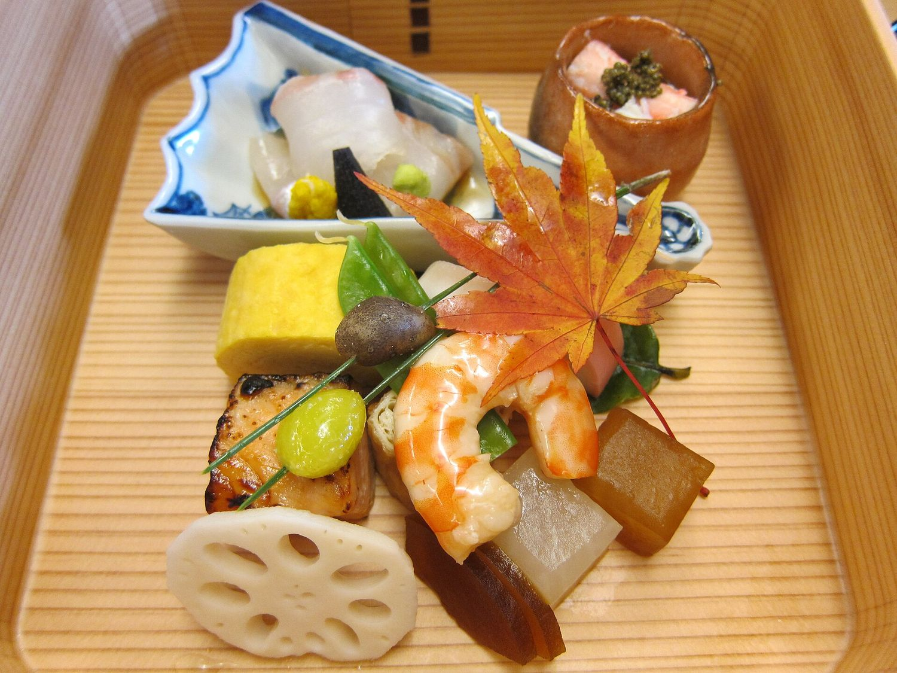
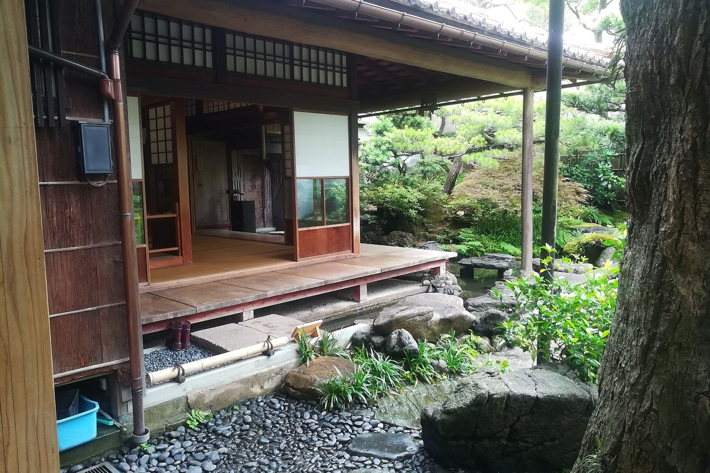
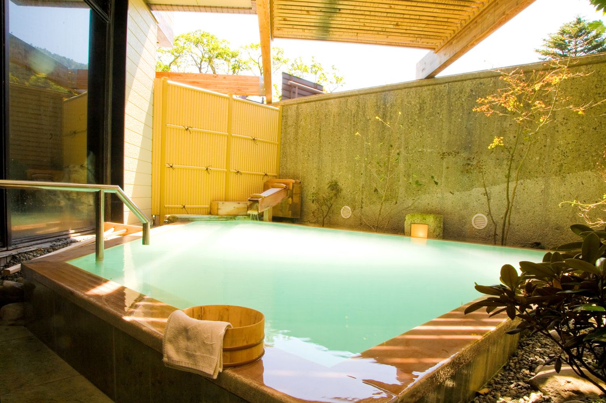

CUISINE
旬を、ひと皿ずつ
山の菜、近海の幸。その日いちばんの食材を、器とともに仕立てる季節の会席です。朝は食事処「睡蓮」で、炊きたての土鍋ごはんと和の朝食を。

ROOMS
寛ぎの間
全20室。縁側ごしに庭を眺める和室から、ひとり旅のための静かな一室まで。どの部屋にも、余白のある時間を用意しています。
| 和室30㎡・定員4名 | ¥24,000／泊・室 |
| ツイン22㎡・定員2名 | ¥16,000／泊・室 |
| シングル14㎡・定員1名 | ¥8,000／泊・室 |

ONSEN
翠の湯
湯船に満ちる、やわらかな翠色のにごり湯。夜は湯けむりの向こうに星を、朝は木々の光を眺めながら。男女別の大浴場と露天風呂は15:00〜24:00、6:00〜9:00にご利用いただけます。（架空の温泉です）
INFORMATION
- チェックイン
- 15:00 − 22:00
- チェックアウト
- − 10:00
- 客室数
- 全20室（和室・ツイン・シングル）
- Wi-Fi
- 全館無料
- 駐車場
- 20台・無料
- 所在地
- 〒000-0000 架空県蓮池市翠蓮1-2-3（実在しない住所です）